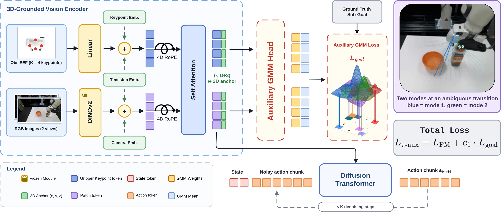
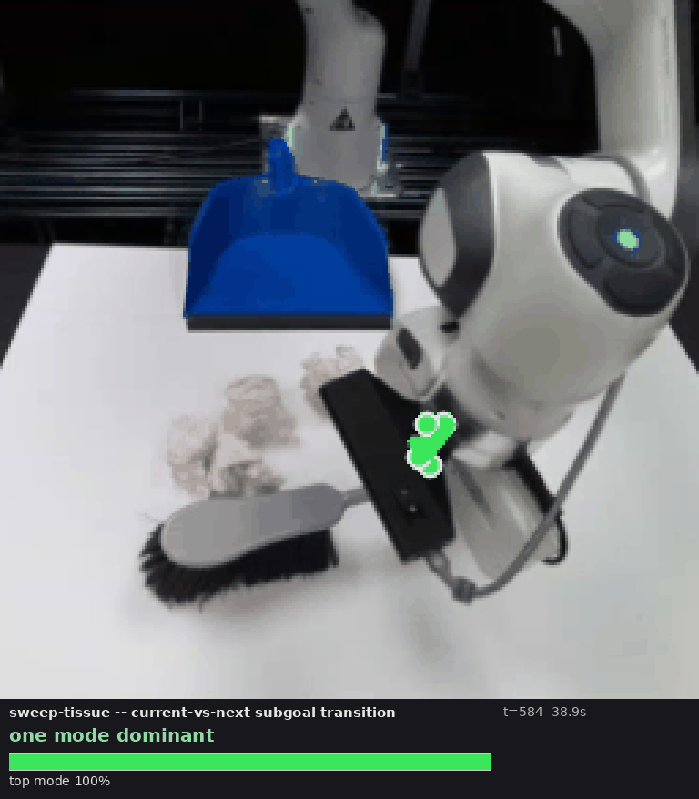
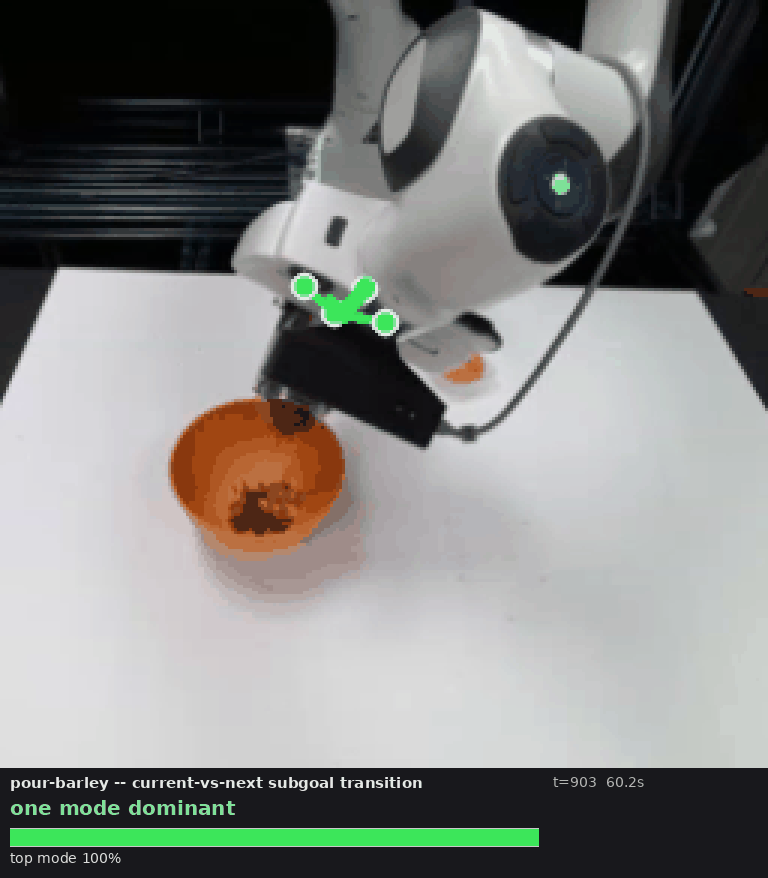
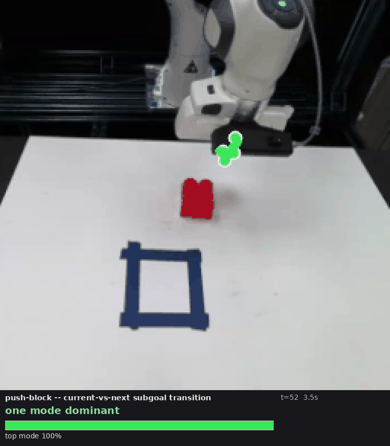

Abstract
We present GIST, an end-to-end visuomotor policy trained with an auxiliary sub-goal prediction loss for manipulation tasks with non-prehensile components. Adding structure to behaviour cloning manipulation policies has been shown to improve robustness and generalization, with sub-goal based hierarchies predicting intermediate sub-goals with a high-level model and leaving a low-level policy to reach them. These sub-goals are typically extracted at gripper open-close frames, and hence the hierarchy is learned around this discrete signal. Non-prehensile settings, such as pouring or sweeping, hold the gripper in a fixed configuration, so no such open-close events occur and transitions go undetected.
GIST instead uses sub-goals purely as a training signal. An auxiliary head reads the visual tokens the policy acts on and predicts a weighted Gaussian mixture over the next sub-goal gripper pose, placing a mode on each plausible sub-goal instead of collapsing to an average. The head is discarded after training. Across four simulation and three real-world tasks, GIST outperforms a standard sub-goal based hierarchical policy by 15.2% and a stronger uncertainty-aware baseline that we formulate by 5.9%, while removing the auxiliary loss costs 10.7% in simulation and 33.3% in the real world. GIST also outperforms Diffusion Policy by 5.0% across five prehensile and non-prehensile MimicGen tasks, and by 4.4% in target area coverage on Push-T. Performance is largely insensitive to the sub-goal extraction procedure, indicating that what matters is the presence of spatial goal supervision, not its precise definition.
Motivation
Non-prehensile tasks provide no discrete event on which to segment
Pouring, sweeping and pushing maintain the gripper in a fixed configuration throughout the motion. Hierarchical policies that segment demonstrations at gripper open-close events therefore observe no transition, and in the neighbourhood of a boundary a single-pose predictor is drawn toward the average of two valid targets.
A high-level model commits to one sub-goal and a low-level policy reaches it
- Sub-goals are extracted at gripper open-close frames, which do not occur in non-prehensile motion.
- On either side of a boundary the observation is nearly identical while the target changes discontinuously, so a single regressed pose falls between the two.
- An incorrect sub-goal is passed downstream, and the low-level policy cannot recover from it.
- Two networks are evaluated at inference.
The sub-goal supervises the visual tokens and is never supplied as an input
- Sub-goals are extracted from the trajectory itself; six procedures perform comparably.
- An auxiliary head predicts a Gaussian mixture over the next sub-goal, assigning one mode to each plausible target rather than averaging them.
- Only the shared encoder receives the goal gradient, so the sub-goal shapes the representation available to the action head.
- Neither a high-level model nor a sub-goal input is required at inference; a single end-to-end network is deployed.
Pouring
Grasp a jar, transport it over a bowl, and tilt to pour. The pouring phase contains no gripper event.
Sweeping
Push crumpled tissues into a dustpan with a brush. Several sweep orderings are valid.
Pushing
Displace a block to a target region without grasping it.
Method
A single network trained under two objectives on a shared visual representation
A sub-goal here is the gripper configuration at a frame where one stage of a demonstration ends and the next begins. It carries no semantic label and amounts to a waypoint of the end-effector trajectory, represented by four gripper keypoints. GIST is a flow-matching DiT policy on 3D-grounded visual tokens. During training an auxiliary head reads the same tokens and is trained by the negative log-likelihood of the demonstrated next sub-goal under a per-anchor Gaussian mixture. The total loss is LFM + c1·Lgoal with c1 = 0.1, so that the sub-goal shapes the representation attended to by the action head without entering its input.

3D-grounded visual tokens
Each DINOv2 patch is unprojected with depth and calibration to a world-frame anchor. Four gripper keypoints join as tokens, and a 4D rotary embedding over (x, y, z, t) conditions attention on relative metric geometry.
Per-anchor Gaussian mixture
Every grounded token proposes a sub-goal displacement and a weight. Trained by negative log-likelihood across several Gaussian widths, from broad to narrow, the mixture keeps a mode on each plausible next sub-goal rather than averaging them, which is how a regression head fails.
End-to-end at deployment
The goal head receives gradient only from Lgoal, the DiT only from LFM; both reach the shared encoder. At inference the encoder runs once and the DiT acts on observation and proprioception alone, since the representation already encodes the sub-goal structure. Neither a high-level model nor a sub-goal input is required.
Real-world rollouts
An identical policy and training set, with and without the auxiliary loss
The two policies share the architecture, random seed, data ordering and training schedule; the only difference between them is the auxiliary gradient. Each policy is trained on 100 teleoperated demonstrations and evaluated on 20 distinct initial scene configurations, in which the placement of every object is varied so that the configurations span the workspace. Eight rollouts are shown per task, arranged in columns that scroll horizontally, with GIST in the upper row and the ablation in the lower row. Both clips in a column are played at a single speed, indicated on each clip.
Auxiliary head
The dense mixture at a sub-task boundary
Every grounded token proposes a sub-goal pose, and the head maintains a full mixture over these proposals. Each sequence below is a five-second window centred on a single ground-truth sub-goal transition, so that the interval of genuine ambiguity is not obscured by the remainder of the episode. The mode the gripper is currently working towards is projected into the front camera in green and the one that follows it in orange, with the bar reporting the weight the head assigns to each and the readout giving the distance from the gripper to both. As a boundary is approached, weight transfers from the outgoing sub-goal to the next while both remain represented, which is the behaviour that a single regressed pose cannot express.



Three tasks; scroll the strip horizontally to reach the rest.
Results
Both the supervision and its distributional representation contribute
Success rate (%) on four simulation tasks and three real-world tasks. Every method that uses sub-goals adopts the same extraction, AWE-greedy at a threshold of 0.35, which picks the waypoints that best reconstruct the demonstrated trajectory. Hovering a bar reports its value, and each chart can be switched to a table.
Citation
BibTeX
@inproceedings{gist2027,
title = {{GIST}: Goals as Implicit Supervision at Training for Visuomotor Policy Learning},
author = {Anonymous Authors},
booktitle = {IEEE International Conference on Robotics and Automation (ICRA)},
year = {2027},
note = {Under review}
}